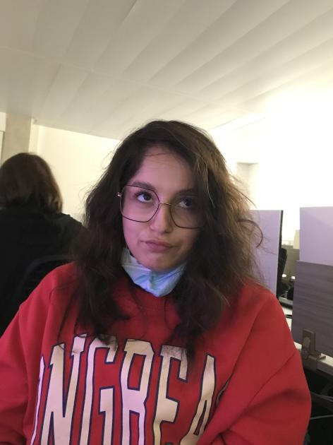
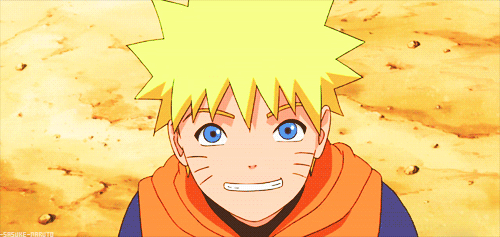

MORVILLE Naomi

Code :
Graphisme
:
Orthographe
:
Les jeux que je préfère :
-Crash
-Les Sims
-Simcity
-Civilization
-Uncharted
-Mario
-Sonic
-Animal crossing
-Need for speed
-Burnout
Je me considère comme une exploratrice de la vie, j'aime beaucoup de choses, j'ai donc souvent changé de domaine.
BAC STMG dans le but de faire de la comptabilité, une année de droit, une année de mise à niveau scientifique, 3 mois
de licence biochimie, puis une prépa entertainment et enfin cette première année de game. Je souhaite juste profiter
de la vie, gagner ma vie en faisant quelque chose que j'aime. Et il me tient à coeur de faire vivre des expériences intéressantes
et fascinantes aux personnes. Et à côté, voyager, découvrir le monde, les différentes cultures, les différentes personnes, faire du sport, lire, créer
un projet en rapport avec ma passion du livre, profiter de mes proches et de tout ce que la vie a à offrir.
CV Morgan
